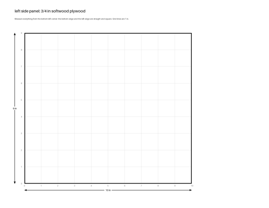
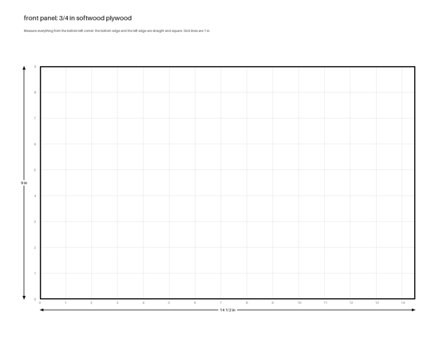
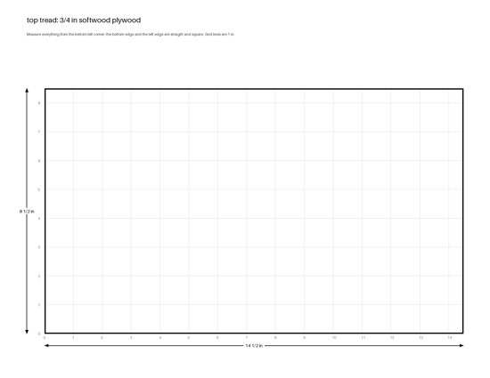

Measure and mark: one page a piece, dimensioned from its square edges, on a 1 in grid.
Print and tape: full size, 15 letter pages; print at 100% and check the ruler.
Project and trace: open a piece's pattern full screen on a projector, zoom until the yellow square is 4 in, and trace.
 | left side panel 3/4 in softwood plywood 10 × 9 in · 0 hole(s) · 2 page(s) full size project and trace |
| right side panel 3/4 in softwood plywood 10 × 9 in · 0 hole(s) · 2 page(s) full size project and trace | |
 | front panel 3/4 in softwood plywood 14.5 × 9 in · 0 hole(s) · 2 page(s) full size project and trace |
| back panel 3/4 in softwood plywood 14.5 × 9 in · 0 hole(s) · 2 page(s) full size project and trace | |
 | top tread 3/4 in softwood plywood 14.5 × 8.5 in · 0 hole(s) · 2 page(s) full size project and trace |